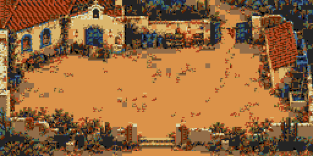
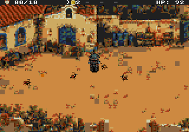
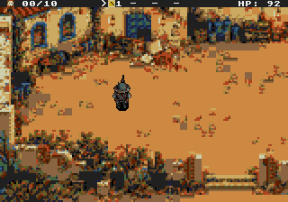
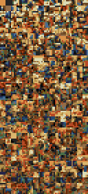

Segurar o pátio.
Dar tempo para a fuga.
A igreja, os muros e os objetos do concept agora formam um cenário em tiles dentro da ROM. O banco virou barricada; água e bagagens ficaram para trás. O centro aberto dá espaço ao combate. Derrote 10 inimigos para concluir a cobertura da retirada.
Esta é a fase para sua aprovação. As próximas fases receberão seus elementos após essa revisão, com aprovação de cada conjunto antes da integração. As músicas existentes já foram distribuídas pela campanha.
Mapa, estados e espaço jogável

A linha azul representa o recorte da tela. As áreas vermelhas mostram os volumes sólidos; os limites externos também impedem passagem. A rolagem acompanha Damião no jogo. O contorno aqui é uma sobreposição de revisão, não parte da arte.
Todos cruzam o pátio; a igreja permanece inteira. A rua de serviço continua acessível, e o diálogo confirma o que foi preservado.
Parte do telhado e da parede cai. A igreja continua reconhecível, a aparência persiste após a pausa e o diálogo apresenta o desvio pelos escombros.
A fase rodando
Captura do Genesis Plus GX com áudio da ROM: caminhada, pausa, combate e bomba. Os controles são reais. A vida é mantida para a gravação e os testes; as formações do benchmark são controladas na RAM volátil do emulador.


Desempenho medido
| Configuração da fase | NTSC | PAL |
|---|---|---|
| Combate natural por 24 segundos | 60 FPS | 50 FPS |
| 4 inimigos + 6 tiros de cada lado, sustentados | 60 FPS | 50 FPS |
O cenário permanece na memória de vídeo. A câmera movimenta os planos, o HUD fica fixo e a bomba troca apenas o trecho da igreja. O limite de quatro inimigos e seis tiros por grupo é aplicado pela fase.
O teste fora desse orçamento, com oito inimigos e 32 tiros, ainda causa queda. Esses números também estão nos relatórios. Testes em emulador; console físico ainda não verificado.
A música do lugar
A Ladainha de Ferro acompanha a igreja e a defesa dos refugiados. O andamento cresce com a ameaça. As outras faixas existentes foram associadas ao abrigo, à investigação e ao avanço industrial.
Ver a distribuição de músicas e os formatos propostos para todas as fases
Atlas e arquivos de produção
560 tiles 8 × 8 compartilhados entre os dois estados. Os mapas e a paleta usam o formato do hardware; há também um arquivo para inspeção no Tiled.

A fuga aparece nos diálogos e nos elementos do cenário. Esta entrega não adiciona NPCs de evacuação animados. Mapas verticais ou maiores que 512 × 256 terão sua estratégia de memória validada na produção da respectiva fase.